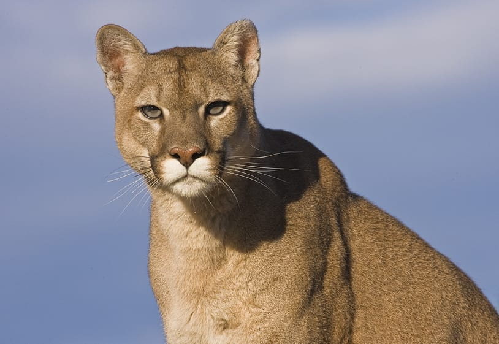
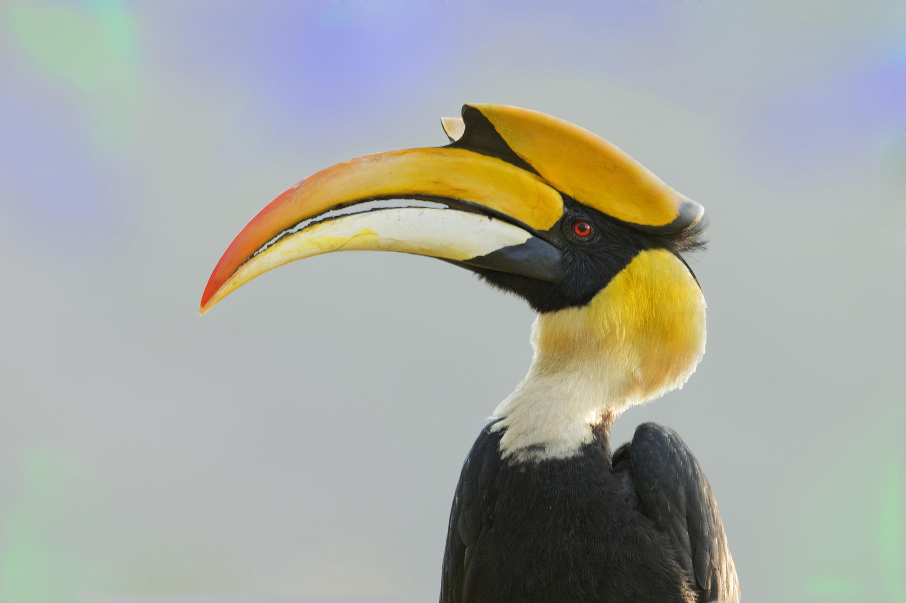
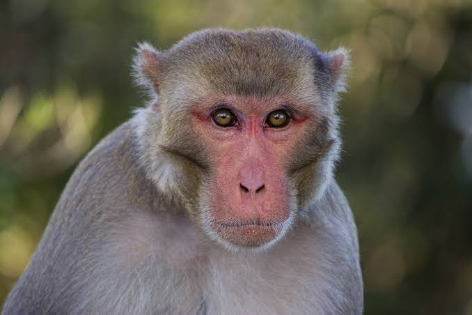
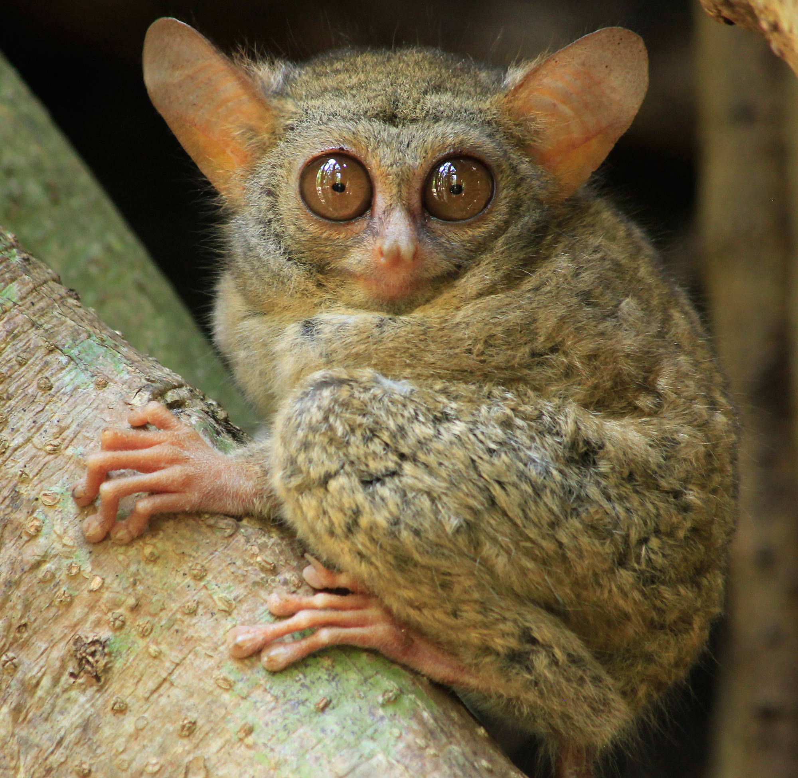

It inhabits North, Central and South America, making it the most widely distributed wild, terrestrial mammal in the
Western Hemisphere, and one of the most widespread in the world.The oldest fossil "proto-frog" Triadobatrachus is known from the Early Triassic of Madagascar (250 million years ago),
but molecular clock dating suggests their split from other amphibians may extend further back to the Permian, 265
million years ago.

Hornbills are birds found in tropical and subtropical Africa, Asia and Melanesia of the family Bucerotidae. They are
characterized by a long, down-curved bill which is frequently brightly coloured and sometimes has a horny casque on the
upper mandible.

Macaques are found in a variety of habitats throughout the Asian continent and are highly adaptable. Certain species are
synanthropic, having learned to live alongside humans, but they have become problematic in urban areas in Southeast Asia
and are not suitable to live with, as they can carry transmittable diseases.

All tarsier species are nocturnal in their habits, but like many nocturnal organisms, some individuals may show more or
less activity during the daytime. Based on the anatomy of all tarsiers, they are all adapted for leaping even though
they all vary based on their species.